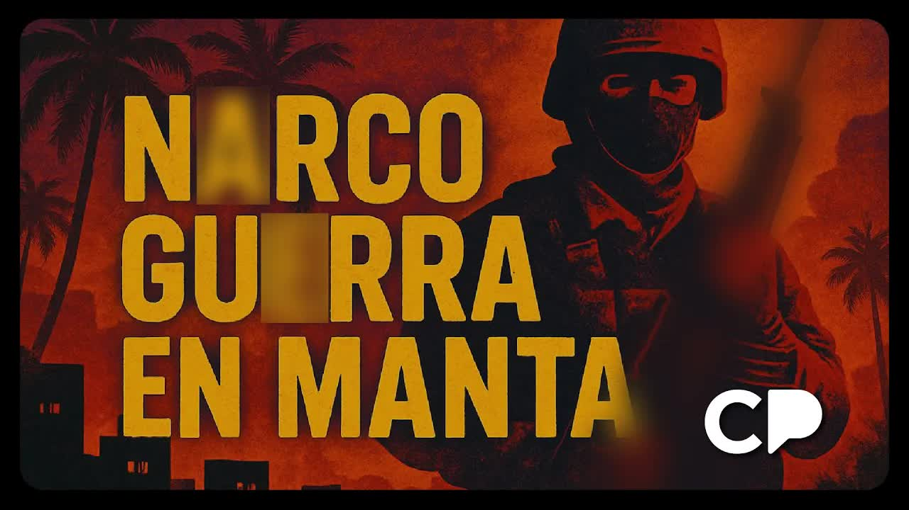
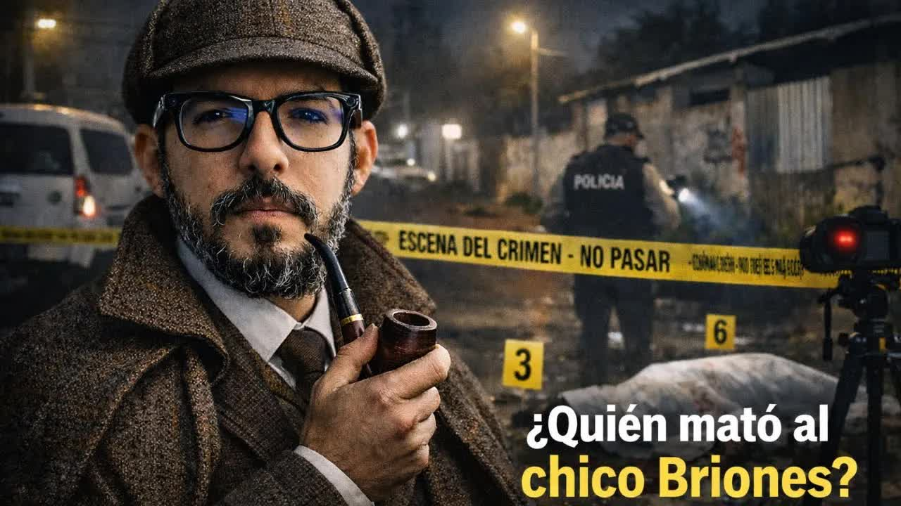
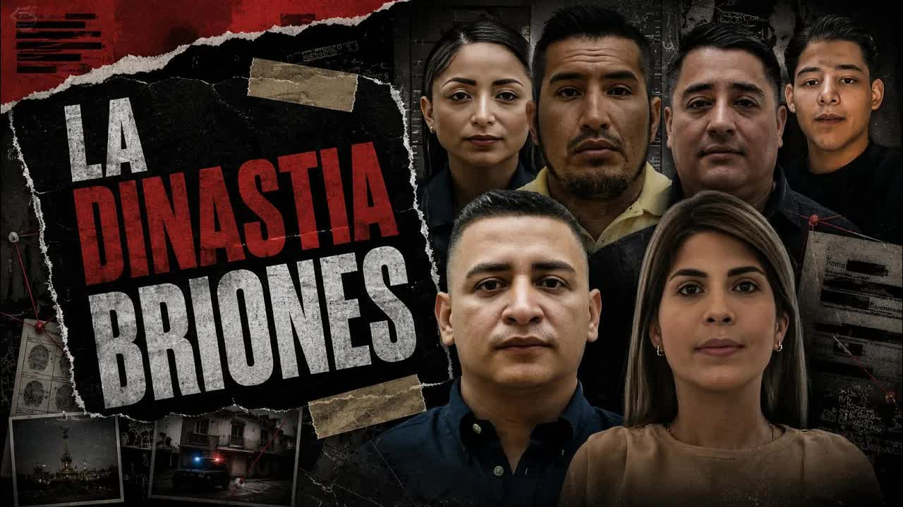
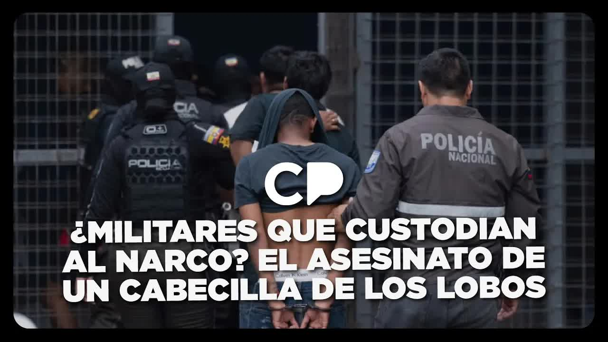
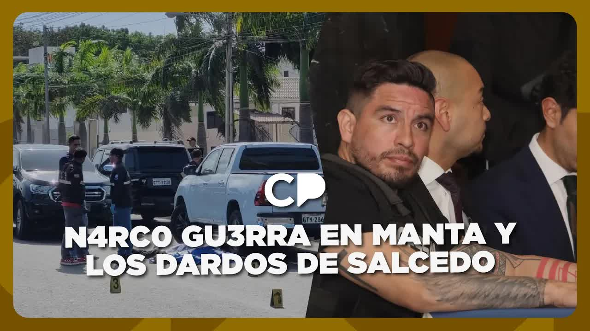
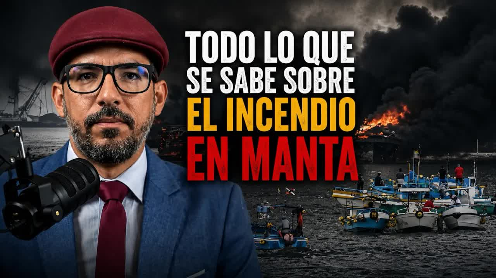

Primera esposa
Carla Romero
La Policía llegó a sospechar de ella por el atentado de la boda de 2021.
✝2022Un restaurante de Barbasquillo, Manta
Asesinada.
Flavio Leonardo Briones Chiquito era hijo de pescadores y capitán de barco. En menos de una década pasó de cargar droga con sus propias manos a controlar el puerto de Manta, con policías comiendo en su mesa, militares cobrando por protegerlo y una Fiscalía provincial que hacía lo que él disponía. El 16 de julio de 2025 unos hombres vestidos de militares lo obligaron a bajarse de su Maserati blindado y lo mataron junto a su esposa y sus dos custodios. En los seis meses siguientes cayeron su hermano, su hijo de 16 años y su socio operativo. Nadie ha dicho quién ordenó ninguna de esas muertes.

Manta vive del puerto y del atún. Cuando la cocaína de Colombia y Perú necesitó una salida al Pacífico, Ecuador se convirtió en el puerto y Manta en la puerta. En 2025 el país rompió su récord de violencia con 9.216 homicidios. Flavio Leonardo Briones Chiquito venía de esa puerta: hijo de pescadores, capitán de barco, un trabajador más del muelle. Empezó como aprendiz. Cargaba la droga él mismo. No tenía blindado, no tenía pistola, no había mandado matar a nadie. Tenía un grupo de amigos: un contador que usaba Excel, un marino que creía que mover cocaína era como mover atún, un vigilante y un policía de Jaramijó. Pasaban las noches bebiendo en el hotel Poseidón. Según los reportes de inteligencia que citó Boscán, se inició de la mano de alias Gerald, el narco al que llamaban el Pablo Escobar ecuatoriano y que fue extraditado desde Colombia a Estados Unidos en 2017. Tras esa caída, Briones tomó control de muchas de sus rutas y para fines de 2019 ya era un narcotraficante consolidado sin pertenecer a ninguna banda ni tener un círculo íntimo conocido. Cuando lo mataron, la Policía decía que era el número dos de Los Lobos. Otras fuentes lo vinculaban siempre a Los Pepes.
En una de esas noches conoció a Génesis Michelle Mendoza Tuárez, muy joven, de orígenes humildes, obsesionada con las narcoseries y en especial con La reina del sur. Se casaron en 2021 en la boda que nadie en Manta olvida: Elvis Crespo cantó en vivo. Al salir de la fiesta, en un Porsche y con los zapatos en la mano, la esperaron unos sicarios. Un disparo le cercenó un dedo de la mano izquierda. Sobrevivieron los dos. En los archivos oficiales el atentado quedó atribuido a una banda local menor; la Policía sospechó siempre de la exesposa de Briones, Carla Romero, que sería asesinada en 2022 en un restaurante de Barbasquillo. Meses después de la boda, en una fiesta en Salinas, el vigilante del grupo, Andrés Moreira, dijo delante de todos que quería verlo muerto. Briones pidió en secreto a cada uno de sus amigos que lo mataran y uno por uno le respondieron que no eran asesinos. Moreira fue asesinado en mayo de 2023. En su velorio entraron motorizados disparando metralletas: cuatro muertos más y 18 heridos. Briones y Mendoza asistieron al entierro.
Así es como el cuento de hadas se convierte en narconovela.
Andersson Boscán, Café la Posta, 18 de julio de 2025
Después vinieron las empresas: pesca, exportación, una constructora, una distribuidora de mariscos. En 2021 recibieron los permisos que los habilitaban para operar y exportar pescado. Por debajo de esas oficinas pasó, según la Fiscalía, el dinero de la cocaína entre 2021 y 2024. En el mar funcionaba un sistema de relojería: lanchas saliendo de Jaramijó al amanecer, paquetes lanzados al agua cuando aparecía un dron, boyas con GPS y barcos pesqueros convertidos en gasolineras flotantes para las lanchas que cruzaban hacia Centroamérica. Pero el dinero era lo de menos. Un alto mando de la Policía Nacional recibía 500.000 dólares al mes. Militares de la zona cobraban 50.000 a la semana. La Fiscalía provincial actuaba según lo que Briones disponía: si pedía un allanamiento, se hacía; si pedía que un expediente desapareciera, desaparecía. Policías y militares cenaban en su casa y le avisaban antes de cualquier operativo. En Manta se sabía que si la pareja entraba a un restaurante había que salir. En septiembre de 2024 lo sentenciaron a diez años. No entró a la cárcel. En los papeles de la Policía era un objetivo de intermedio valor. Diez meses después estaba muerto.
El 21 de diciembre de 2024 el pesquero Patricia Lin salió del puerto de Manta con 21 tripulantes y no volvió. El Estado lo buscó 45 días con naves, helicópteros y comunicados; 21 familias durmieron con el celular en la mano. Lo que un colaborador de Briones contó después a inteligencia policial, y que ningún medio había reportado, es que esa búsqueda nunca tuvo sentido: los Briones Mendoza mandaron abordar el barco porque llevaba cocaína de la competencia, pasaron la carga a una embarcación propia, eliminaron a los 21 tripulantes y ordenaron hundirlo. Meses después aparecieron partes del casco. Una de las voceras de las familias fue asesinada en septiembre de 2025. Eso, dijo Mónica Velásquez, es el poder de los Briones: el Estado paseó por el mar 45 días fingiendo buscar a 21 muertos que su propia gente sabía dónde estaban.
El poder tenía también un lado torpe. Un año antes de la emboscada, agentes de tránsito pararon un carro de los Briones Mendoza en un control de rutina y encontraron en la maletera casi dos millones y medio de dólares. Nunca avisaron a la Policía: los agentes le robaron a los capos. Eso explica, según Boscán, por qué después empezaron a ser asesinados agentes de tránsito a diestra y siniestra sin que ninguna autoridad explicara qué pasaba, y por qué los sicarios llegaron hasta el cementerio donde enterraban a uno de ellos y mataron a varios miembros de su familia. También en el último año y medio venían muriendo dueños de flotas y barcos de Manta: el último, un capitán conocido como Capi Zapata, vecino de los Briones en Marina Blue, a quien habrían intentado extorsionar para usar sus embarcaciones. Y sesenta días antes de la emboscada, la Fiscalía allanó por rutina una de las propiedades del matrimonio. No pasó nada. Les habían abierto procesos por lavado de activos y por tráfico y se los habían cerrado. La justicia le dio vueltas en círculo a la pareja durante un par de años.
De la emboscada al último socio: del 16 de julio de 2025 al 19 de marzo de 2026. Antes, en 2022, ya habían matado a la primera esposa.
La Policía llegó a sospechar de ella por el atentado de la boda de 2021.
Asesinada.
Alias el Mexicano, Capi Briones o Leo Briones. Hijo de pescadores, capitán de barco. Para la Policía, número dos de Los Lobos; para otras fuentes, cabeza de Los Pepes. Sentenciado a diez años en septiembre de 2024 sin entrar a la cárcel.
Hombres con uniforme militar simularon un control, lo obligaron a bajarse de su Maserati blindado y lo mataron. Tenía 38 años.
Participaba de los envíos y de las disposiciones del sicariato, según la Policía. Perdió un dedo en el atentado de la boda.
Asesinada a su lado en la emboscada. Tenía 31 años.
Hermano de Flavio.
Lo mataron mientras desayunaba.
Reclamaba el barco Gold Tuna. Dijo que no quería ese mundo.
Sicarios en moto, 20 minutos después de mandar un audio sobre el barco. Tenía 16 años.
Dante quería irse lejos y cuidarla.
En julio de 2025 la Policía lo señaló por difundir mensajes para atentar contra policías.
Asesinado.
Pacheco, de 47 años, era militar en servicio activo y su pareja trabajaba como secretaria de un fiscal. Plúas, de 35, había sido dado de baja en 2022; era su primer día de trabajo.
Muertos en la emboscada junto a la pareja.
El Pablo Escobar ecuatoriano, según Boscán. Briones empezó con él. Extraditado desde Colombia a Estados Unidos en 2017; nunca delató a nadie. Tras su caída, Briones se quedó con muchas de sus rutas.
Líder de Los Lobos, por encima de Briones en la jerarquía. Objetivo de alto valor sin recompensa. Para la inteligencia naval, sospechoso de estar detrás de la quema de 35 barcos en Manta en junio de 2026.
Maneja Geopaxi, la empresa a cuyo nombre está matriculado el Gold Tuna. Negoció con Dante el traspaso del barco. Según la fuente de Boscán, fue quien citó a Dante el día, la hora y el lugar en que lo mataron.
La mañana del 16 de julio de 2025, en la vía Manta-San Mateo, frente al colegio Manabí, tres vehículos blindados avanzaban en caravana. En el Maserati con blindaje cinco iban Briones, de 38 años, y Mendoza, de 31; en una camioneta detrás, dos custodios. Dos camionetas de tipo militar les cerraron el paso y unos hombres de uniforme les ordenaron detenerse para un control. Como el blindaje resistía las balas, los obligaron a bajar. Cuando los tres hombres estuvieron fuera, en lugar de pedirles los papeles, los acribillaron; a ella la mataron dentro del carro. Los peritos contaron más de 60 indicios balísticos. Cuatro muertos en minutos. Criminalística encontró después una camioneta de las mismas características incinerada, con los uniformes adentro: no eran de apariencia militar, eran uniformes militares. Esa tarde el comandante de la zona 4, Giovanni Naranjo, dijo una frase que pasó rápido en los noticieros.
Es posible que haya existido una filtración de información sobre sus movimientos.
Giovanni Naranjo, comandante de la zona 4, 16 de julio de 2025, citado por Mónica Velásquez
Los custodios eran la clave. El Comando Conjunto emitió un comunicado para desvincular a las Fuerzas Armadas: Éder Luis Plúas Vargas, de 35 años, había sido dado de baja en 2022. Boscán habló con sus empleadores anteriores en Manta: era custodio de una organización decente, recibió a última hora una oferta con urgencia y un sueldo que no lo hizo pensar, renunció y al día siguiente fue a trabajar. Ese fue su último día. El comunicado se acababa con el otro: Carlos Benedicto Pacheco Cusme, de 47 años, militar en servicio activo con funciones de seguridad especial. Su pareja, Gisela Beatriz Vélez Pacheco, abogada y secretaria de un fiscal, llegó a la escena identificándose como funcionaria de la Fiscalía. Para la Policía, la explicación de cómo Briones tenía información de primera mano sobre los allanamientos. La hipótesis que se maneja es que la propia seguridad de los Briones estuvo involucrada y por eso los custodios habituales no estaban ese día.

Esa noche sobre Manta alguien lanzó fuegos artificiales como si fuera año nuevo. Quienes mandaron a matar a la pareja, según Boscán y Velásquez, fueron Los Choneros leales a Adolfo Macías, alias Fito, que en esas horas esperaba en La Roca su extradición a Estados Unidos. En un video del festejo, un hombre armado gritaba vivas a Macías. Los Lobos, la organización más poderosa del país, habían querido aprovechar la caída de Fito para entrar en una provincia que siempre fue chonera. La respuesta fue inmediata: esa misma noche, en el burdel El Imperio, cinco asesinados y panfletos que decían que Los Pepes estaban de vuelta, una banda que la Policía cree que son Los Lobos disfrazados. Al día siguiente, cinco muertos y seis heridos más; los sicarios buscaban a dos choneros y dispararon contra una cancha y contra un carro estacionado. Ahí mataron a un policía. La madrugada del 18 de julio mataron a otro. Inteligencia recabó que los dos bandos pagaban por muertes de policías y de militares, a los que acusaban de haber participado en la emboscada; en los mensajes destacaba César Alfredo Cedeño, alias Transa. Entre martes y jueves: 25 asesinatos y 35 heridos. La Policía pidió 250 agentes para Manta y solo consiguió alojamiento privado para 50. Ecuador venía de cuatro semanas con las muertes violentas a la baja. Y los medios hablaban del asesinato de una empresaria.
Cuando Briones cayó, la cadena no se cerró: se abrió. El 17 de enero de 2026, en la calle 13 del centro de Manta, Orlando Gabriel Briones Chiquito, su hermano, desayunaba en un local. Hombres armados entraron y lo mataron en su silla. Once días después, el 28 de enero, a plena luz del día en el malecón, sicarios en motocicleta interceptaron un vehículo. Adentro iba Dante Yair Briones Romero, de 16 años, hijo de Flavio y de Carla Romero. Veinticinco indicios balísticos. Dante se había dado cuenta de a qué se dedicaba su padre a los 9 años. Pocos días antes de morir le dio una entrevista a un periodista que se comprometió a no publicarla mientras viviera: dijo que personas desde México le habían escrito para que continuara lo que su padre dejó, que él no quería ese mundo, que solo quería irse lejos y cuidar a su hermana de 3 años.
El 30 de enero Boscán contó lo que, dijo, la Policía no sabía o hacía como si no supiera: las últimas horas de Dante. Había llegado a la ciudad más peligrosa del mundo para él sin seguridad, sin escondite y sin armas. La razón era el Gold Tuna, el barco que todo Manta llama el barco de Leo Briones, pagado con 10 millones de dólares de la cocaína. Un empresario colombiano se lo compró a través de una compañía llamada Geopaxi, que sigue activa: según los registros de la Armada, la matrícula con la que opera está a su nombre y vigente al menos hasta diciembre de 2026. En papeles, el barco figura a nombre de una contadora que Boscán describió como testaferro. Dante creía que esos 10 millones servirían para asegurar su vida y la de su hermana. El barco no es pesquero: la Policía lo ha visto salir de Manta a Jaramijó y moverse como un carguero, custodiado por dos o tres equipos de la Armada que cobran 50.000 dólares cada uno. A Geopaxi nadie la mira, nadie la investiga, nadie le incauta nada.
Una fuente cercana a Dante, que pasó media grabación llorando, le entregó a Boscán el último audio del muchacho, grabado 20 minutos antes de que lo mataran y difundido con su autorización. Dante decía que ya había conseguido con su abogado una carta de Geopaxi para poder fondear el barco ese mismo día y que solo faltaba que Alvarito la firmara. Álvaro es Álvaro Buitrago, quien maneja Geopaxi y había negociado con Dante el traspaso del barco. Según lo que Dante le confió a la fuente, fue ese joven con fachada de empresario quien lo citó ese día, en ese lugar y a esa hora. En lugar de Álvaro llegaron los sicarios. Ese mismo día un militar que hacía guardia en el muelle vio a Dante en la playa y, cuando volvió a resguardar la escena, le mandó a Boscán una foto para avisarle que el pelado había muerto. Faltaba uno: el 19 de marzo de 2026, en la gasolinera de la cooperativa Coactur en la vía a Portoviejo, los sicarios alcanzaron a César Alfredo Cedeño, alias Transa, el principal socio operativo de Briones. Murió horas más tarde. Junto a él murió otra persona.

En nuestro país solo importan las cosas que salen en la tele: las muertes que salen en la tele, los lavados de activos que salen en la tele y los narcos que salen en la tele. Todo lo demás se le permite operar en la sombra, porque todos dicen tener miedo.
Andersson Boscán, 30 de enero de 2026
El 18 de mayo de 2026 Mónica Velásquez, desde el exilio, publicó el expediente completo: La Dinastía Briones. Seis nombres, una sola red, menos de cuatro años. Carla Romero, Flavio Briones, Génesis Mendoza, Orlando Briones, Dante Briones y César Cedeño. Mientras tanto el Estado anunció una operación contra Los Lobos con 65 detenidos y bienes asegurados. Ningún operativo respondió las preguntas que importan: quién ordenó la emboscada del 16 de julio, quién mandó matar a Orlando, a Dante y a Transa, quién mandó hundir el Patricia Lin. Así se liquida una dinastía, dijo: sin reina, sin rey, sin herederos. Solo un puerto en Manta que sigue funcionando como si nada.
El puerto siguió ardiendo. El 8 de junio de 2026 un incendio destruyó 14 embarcaciones pesqueras y 21 fibras artesanales en el muelle de Manta. El Ministerio del Interior descartó un atentado: el fuego se originó en la embarcación Jesús es mi Rey durante trabajos de mantenimiento con generadores a diésel. Boscán mostró el informe preliminar de la inteligencia naval que le entregó una fuente: testigos reportaron explosiones previas al fuego, el evento se da en el contexto de la disputa entre Los Lobos y Los Choneros por las rutas marítimas de Manabí y el patrón es consistente con un sabotaje o una represalia criminal. Era, decía el documento, el segundo incidente de magnitud en el puerto en cuatro meses, tras el caso del Gold Tuna, el barco de Briones, que para entonces había sido hundido. La hipótesis de los marinos apuntaba a La O, Celso Oviedo, líder de Los Lobos, y a un alias Papelito como ejecutor. Con Fito extraditado, Fede preso y Celso Moreira a punto de ser extraditado, Los Choneros de Manabí quedaron descabezados y Los Lobos tomaron el control de Manta. Quemaron 35 barcos en un día.
Actualizado el 5 de septiembre de 2026
Extraditan desde Colombia a Estados Unidos al mentor de Briones. Él se queda con muchas de sus rutas.
Briones es ya un narcotraficante importante sin banda ni círculo íntimo conocido.
Se casa con Michelle Mendoza; canta Elvis Crespo. Al salir, un atentado le cuesta un dedo a la novia. Ese año reciben permisos para operar y exportar.
Asesinan a la primera esposa en un restaurante de Barbasquillo.
Matan al vigilante del grupo. En su velorio, motorizados dejan cuatro muertos y 18 heridos.
Agentes de tránsito paran un carro de los Briones y se quedan con casi 2,5 millones de dólares. Empiezan a morir agentes.
Lo sentencian. No entra a la cárcel.
El pesquero sale de Manta con 21 tripulantes y desaparece. Lo buscan 45 días.
Sesenta días antes del crimen, la Fiscalía allana una propiedad de la pareja. No pasa nada.
Hombres de uniforme militar simulan un control en la vía Manta-San Mateo y matan a Briones, Mendoza y dos custodios. Fuegos artificiales sobre Manta.
Cinco muertos en El Imperio, panfletos de Los Pepes, dos policías asesinados. 25 muertos y 35 heridos en tres días.
Café la Posta identifica a la pareja que los medios llamaban empresarios y explica la reconfiguración del crimen en Manabí.
Asesinan a una de las voceras de las familias del Patricia Lin.
Matan al hermano de Briones mientras desayuna en la calle 13.
Sicarios en moto matan al hijo de 16 años en el malecón. Había ido por el Gold Tuna.
Boscán publica el audio de Dante, el nombre de Geopaxi y la cita con Álvaro Buitrago.
Matan al socio operativo en una gasolinera de la vía a Portoviejo.
Mónica Velásquez publica el expediente completo.
Queman 35 embarcaciones en Manta. La inteligencia naval habla de represalia criminal entre Lobos y Choneros.
Alias el Mexicano o Capi Briones. Hijo de pescadores que controló el puerto de Manta. Sentenciado a diez años en 2024 sin ir preso.
Esposa. La reina del Pacífico, según Boscán. Participaba de los negocios y del sicariato.
Hijo de 16 años. Reclamaba el barco Gold Tuna. Dijo que no quería ese mundo.
Hermano de Flavio.
Principal socio operativo. Señalado por la Policía en julio de 2025 por incitar a atentar contra policías.
Custodio. Militar en servicio activo con funciones de seguridad especial. Su pareja era secretaria de un fiscal.
Custodio. Exmilitar dado de baja en 2022. Era su primer día de trabajo.
Maneja Geopaxi, la empresa titular de la matrícula del Gold Tuna. Negoció el traspaso del barco con Dante y, según la fuente de Boscán, lo citó el día del crimen.
Líder de Los Lobos, por encima de Briones. Sospechoso, para la inteligencia naval, de la quema de barcos de junio de 2026.

Líder de Los Choneros. Sus leales habrían ordenado la emboscada mientras él esperaba en La Roca.
Comandante de la zona 4 de la Policía. Admitió una posible filtración sobre los movimientos de Briones.
Fotos vía Wikimedia Commons. Adolfo Macías: Penitenciaría (CC BY-SA 4.0).
Emitió un comunicado para desvincular a la institución: Éder Plúas había sido dado de baja en 2022. No explicó por qué Carlos Pacheco Cusme, militar en servicio activo, custodiaba a un narcotraficante.
Dijo la tarde del crimen que es posible que haya existido una filtración de información sobre los movimientos de la pareja.
Solo después de la muerte de Briones calificó el suyo como el mayor caso de lavado de activos de la historia del Ecuador, según relató Boscán. En vida le abrió y le cerró procesos por lavado y por tráfico.
Sobre el incendio del 8 de junio de 2026 descartó un atentado: el fuego se originó en la embarcación Jesús es mi Rey durante trabajos de mantenimiento mecánico y eléctrico con generadores a diésel.




La condena del apellido. Toda una familia borrada del mapa criminal del Ecuador. Es una de las historias más sangrientas e impactantes de nuestra historia reciente. La historia de una dinastía del narco que de un momento a otro pasó de tener el poder completo sobre Manta al cementerio. Carla Romero, asesinada en un restaurante de Barbasquillo. Flavio Briones, su exmarido, asesinado con 60 tiros de fusil al sur de Man…
Leer la transcripción completaVoy a contarte algo que la policía no sabe. ¿Cómo fueron las últimas horas de Dante, el hijo del capo Leo Briones, a quien silenciaron esta semana con tan solo 16 años? No, no, no voy a mentirte, nunca lo hago. Lo más probable es que la policía sí lo sepa, pero que haga como si no. De igual forma la fiscalía, de igual forma la prensa, de igual forma la gente, porque en Manabí todos saben todo, pero la gente es muy fa…
Leer la transcripción completaapelativos cariñosos y y no recuerdas bien cuándo, pero empezó a bromear con cosas personales, con ideas de salir el fin de semana, por ejemplo. A ti no te hace mucha gracia. Eso supongo, no te hace gracia porque tú eres una mujer muy joven, muy bonita, muy en el arranque de la vida y este hombre que es tu jefe, perdón por el cliché, podría ser tu padre, de verdad, tiene el doble de tu edad, 46 y además tienen una es…
Leer la transcripción completa¿Qué está pasando en Manta? ¿Por qué de pronto 25 personas son asesinadas entre el martes y el jueves de esta semana? 35 personas son heridas entre el martes y el jueves de esta semana. No estoy contando los muertos de esta madrugada, sí, que son bastantes, además. Eh, ¿qué sucede? ¿Qué pasa? ¿Dónde empieza? Todo arranca el martes. Moni, ¿qué pasa el martes temprano a la mañana? Así es. Cuatro personas fueron acribil…
Leer la transcripción completao o a veces la mayoría, creo yo, porque están defendiendo algún político. Por ejemplo, cuando Ecuavisa publicaba que había muerto el empresario Rubén Cherres, a quien nunca llamaron narcotraficante. Pero eso es otra historia. Hoy te voy a contar la historia de Leonardo Briones y de Michel Mendoza, que era su mujer, su esposa, y cómo su asesinato va a abrir una nueva ola de violencia para Manabí y tal vez para el Ecua…
Leer la transcripción completamatrícula? Porque la información que las fuentes han empezado a dar a inteligencia naval tiene relación con lo que les he venido contando esta mañana, la hipótesis de que el Vidion está detrás de la gran quema de barcos en Manta. El loco video que como se los he dicho ya es Celso Oviedo Zambrano Casanova, alias Celso Loco Vidio o la O y que podría estar eh detrás de detrás de eh esta gran quema de barcos. Al menos es…
Leer la transcripción completaTranscripciones de los subtítulos automáticos de cada programa. No están corregidas a mano: sirven para buscar una frase y llegar al minuto exacto del video, no como cita textual literal.
Asesinan a una de las voceras de las 21 familias.
Caen el hermano, el hijo y el socio de Briones. Ningún operativo identifica a los autores.
35 barcos quemados en Manta; la inteligencia naval habla de represalia criminal. Los Lobos controlan la ciudad.
Las investigaciones por lavado de activos contra la familia y sus empresas avanzaron a partir de lo publicado.
Los hechos, nombres y cifras de este expediente provienen de lo dicho al aire por Mónica Velásquez y Andersson Boscán entre julio de 2025 y junio de 2026, con fuentes de inteligencia policial, naval y militar que ellos citan. Las atribuciones de asesinatos a la pareja Briones Mendoza son hipótesis de la Policía relatadas en los programas; nadie ha sido procesado por ellas. Los nombres de las víctimas menores de edad que sobreviven se omiten.